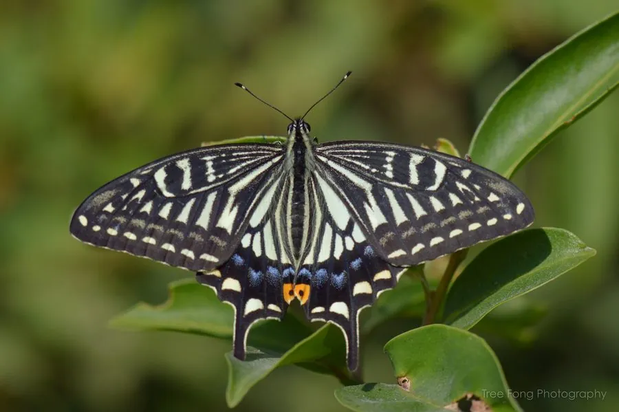

昆虫 · 动物界
柑橘凤蝶 Papilio xuthus

常见的大型凤蝶，翅面黄绿带黑纹，幼虫取食柑橘等芸香科植物，是园林和果园里最熟悉的蝴蝶之一。
- 分类
- 门节肢动物门纲昆虫纲目鳞翅目科凤蝶科属凤蝶属
- 栖息环境
- 柑橘园、山地林缘、庭院与花椒树附近，寄主植物周围
- 地理分布
- 中国大部分地区，以及日本、朝鲜半岛和东南亚
- 保护级别
- 暂无评估
物种志
柑橘凤蝶翅展约 7–9 cm，翅面底色黄绿，翅脉和边缘黑色，后翅有橙黄色月牙斑和细长尾突，雄蝶后翅前缘有一枚黑色性斑，雌蝶体型略大，翅色稍暗。幼虫初孵时呈鸟粪状，长大后变为绿色，头部藏有臭角腺，遇敌时翻出橙色肉角。
成虫喜欢访花吸蜜，飞行敏捷，常在柑橘园、花椒树和庭院中活动；雌蝶把卵产在芸香科植物的嫩叶上，幼虫取食橘、柚、柠檬和花椒的叶片。它一年发生 2–4 代，以蛹越冬，分布在中国大部分地区以及日本、朝鲜半岛和东南亚部分地区。数量多时幼虫会啃食柑橘嫩叶，是次要害虫，但在自然状态下通常被寄生蜂和鸟类控制，无须专门防治。
形态与习性
- 食性幼虫取食柑橘、花椒等芸香科叶片；成虫吸蜜
- 翅展约 7–9 cm
- 生活史一年发生 2–4 代，以蛹越冬
- 防御幼虫受惊时翻出橙色臭角，散发刺鼻气味
- 繁殖雌蝶在芸香科嫩叶上产卵，卵单产
- 习性成虫常在花丛访蜜，飞行敏捷
趣味知识
- 柑橘凤蝶幼虫受惊时会翻出橙色臭角，味道类似酸橙。
- 它的幼虫是柑橘园的次要害虫，但数量通常被天敌控制。
- 柑橘凤蝶的蛹会根据附着物颜色呈现绿色或褐色，起保护作用。